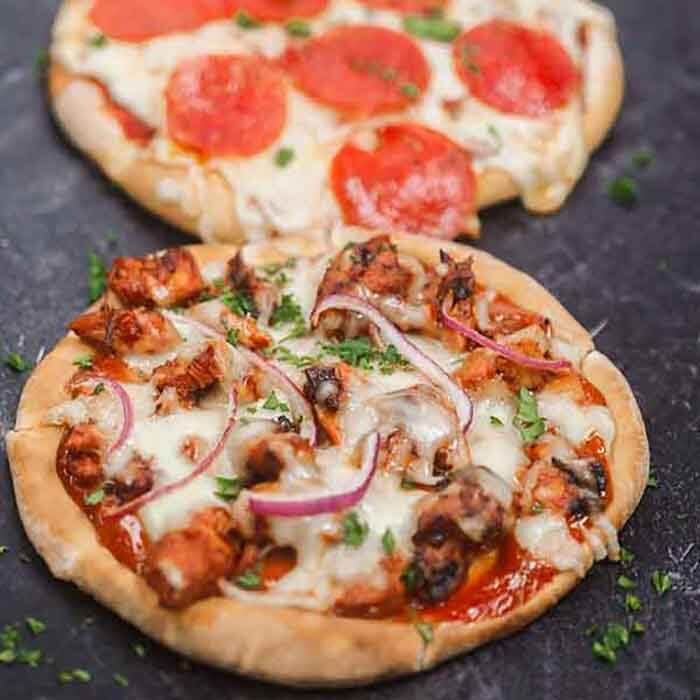

Home
Low Calorie Pita Pizza

Description:
Everyone loves pizza but takeout gets expensive. Something we have been making a lot lately is this Pita Pizza Recipe. It is so easy, frugal and really delicious. Everyone gets to make their own pizza and it is fun too. My kids love to make these and everyone can choose their favorite toppings.
Ingredients:
- 6 Pita Breads
- 3/4 cup Marinara Sauce
- 3 cups Shredded Mozzarella Cheese
- 36 Pieces of Pepperonis or any other toping you'd like!
Steps:
- Preheat the oven to 400 degrees F. Place the pita breads on baking sheets.
- Spoon 2 Tbsp of the Marinara Sauce on each pita.
- Then place 1/2 cup of the shredded mozzarella cheese on each pita. (or as much as you'd like..we won't tell!)
- Top with what ever toppings you'd like.
- Bake uncovered for 10-12 minutes until the pita is browned slightly and the cheese is melted.
- Cool on the baking sheet for 4-5 minutes, slice and enjoy!